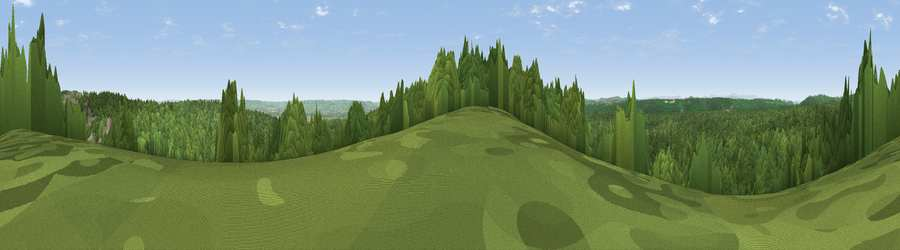

Viewpoint near Ruspidge
#25470 in England · top 54% of its area beats it · near RuspidgeThe view, rendered

A 360° render of this exact spot computed from the terrain model, tree cover and land cover — summer colours, afternoon light, calibrated against photographs of famous viewpoints. Real trees, hedges and buildings will differ in detail.
The panorama
Grey silhouette: terrain skyline in each direction (720 bearings, Earth curvature and refraction included). Dashed green: skyline with trees (+15 m) and buildings (+8 m) as obstacles. Blue strip: how far the ground is visible on each bearing.
Where the view opens
Wedge length = distance to the farthest visible ground on that bearing (vegetation-aware). Rings at 10, 25 and 50 km.
What fills the view
87% woodland · 7% grassland · 4% built-up · 1% cropland ·
Angular shares of the visible panorama (visual magnitude), not map area. Landscape diversity 0.23 (0–1 Shannon).
Key numbers
More beautiful places nearby
The staircase of upgrades: each row has a higher view potential than everything closer. Driving times are estimates from straight-line distance, calibrated against real road routing — check an actual route before setting out.
| Place | Direction | Drive | Score |
|---|---|---|---|
| Blaize Bailey Viewpoint | ENE · 2 km | ~6 min | 69.3 |
| Viewpoint near Littledean | NE · 4 km | ~9 min | 73.8 |
| Viewpoint near Ruardean | NNW · 7 km | ~14 min | 74.2 |
| Viewpoint near Huntley | NE · 10 km | ~19 min | 75.0 |
| Viewpoint near May Hill | NNE · 11 km | ~21 min | 76.1 |
| Chase Wood Hill | NNW · 12 km | ~23 min | 77.6 |
| Viewpoint near Stinchcombe | SE · 15 km | ~27 min | 79.4 |
| Viewpoint near Stinchcombe | SE · 16 km | ~28 min | 80.5 |
51.79720, -2.51364 · source: screening · position refined by local search. Computed location — check access rights before visiting.